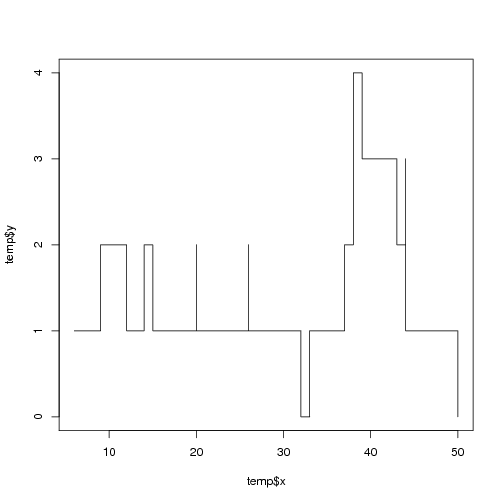

Here is a very common problem: suppose you’re give a series of event timestamps. The events can be anything—website logins, persons entering a building, anything that recurs regularly in time but whose rate of arrival is not known in advance. Here is, for example, such a file which I had to analyze:
05.02.2010 09:00:18
05.02.2010 09:00:18
05.02.2010 09:00:21
05.02.2010 09:00:23
05.02.2010 09:00:24
05.02.2010 09:00:29
05.02.2010 09:00:29
05.02.2010 09:00:30
05.02.2010 09:00:35and so on for several thousand lines. Your task is to anlyze this data and to derive “interesting” statistics from it. How do you do that?
My initial reaction was, hey let’s try to derive the rate of arrival per second over time. Histograms are one way of doing this, except that histograms are known for the dramatically different results they can yield for different choices of bin width and position. So instead of histograms, I tried doing this with so-called density plots.
That, it turns out, was a terrible idea. I think I must have spent a day and a half figuring out how to use R’s density function and its arguments, especially the bandwidth parameter. There are two problems with density: 1) it yields a density, which means that you have to scale it if you want to obtain a rate of events; 2) it’s an interpolation of a sum of kernels, which has the unfortunate side-effect of yielding a curve whose integral is not necessarily unity.
In the morning of the second day, I realized I had been solving the wrong problem. I’m not really interested in knowing the rate of arrival. What I really need to know is how many items is my system handling simultaneously. Think about that for a second. If your data represent the visitors to your website, you really don’t want to know how many visitors come per second if you don’t know how much time the server needs to serve each one. In other words, if you want to make sure the server never melts down, you need to know how many users are served concurrently by the server, and to know that you also need to know how much time is needed for each request.
Or again, if you’re designing a building or a space to which people are supposed to come, be served somehow, and then leave, you really don’t need to know how many people will come per hour; you need to know how many people will be in the building at the same time.
There is something called Little’s Law which states this a bit more formally. Assuming the system can serve the requests (or people, or jobs) without any pileup, then \(N = t \times \Lambda\), where \(N\) is the number of requests being served concurrently, \(t\) is the time spent on each request, and \(\Lambda\) is the request rate. Now it should be obvious that if you know \(t\), the data will give you \(N\) from which you can derive \(\Lambda\) (if you want).
Here’s how I did it in R. Suppose the data comes in a zipped data.zip file, with timestamps formatted as above. Then:
library(lattice) # always, always, always use this library
# Get raw data as a vector of DateTime objects
data <- as.POSIXct(
scan(unzip("data.zip"), what = character(0), sep = "\n"),
format = "%d.%m.%Y %T"
)
# Turn it into a data frame which will be easier to use
data.lt <- as.POSIXlt(data)
data.df <- data.frame(
time = data,
sec = jitter(data.lt$sec, amount = 0.5),
min = data.lt$min,
hour = data.lt$hour
)
data.df$timeofday <- with(data.df, sec + 60 * min + 3600 * hour)
rm(data, data.lt)Note that for this example we’ll assume all events happened on the same day.
Now here’s the idea. We’re going to build a counter that counts +1 for each event and -1 when that event has been served. In R, we can do that with the cumsum function. For example, suppose we have a series of ten events spaced apart according to a Poisson distribution with mean 4:
> x <- cumsum(rpois(10, 4))
> x
[1] 6 9 14 20 26 33 37 38 38 44Suppose each event takes 6 seconds to serve, and build a structure holding x, the coordinates of the original events and of their completion times, and y, the running counter of the number of events being served:
> temp <- list(
x = c(x, x + kLatency),
y = c(rep(1, length(x)), rep(-1, length(x)))
)
> reorder <- order(temp$x)
> temp$x <- temp$x[reorder]
> temp$y <- cumsum(temp$y[reorder])If you now plot the temp structure here is what you would get:

With all this in place, we have now everything we need to go ahead. The little script above can go into its own function or it can be defined as xyplot’s panel argument:
kLatency <- 4 # seconds
xyplot(
1 ~ timeofday,
data.df,
main = paste("Concurrent requests assuming", kLatency, "seconds latency"),
xlab = "Time of day",
ylab = "# concurrent requests",
panel = function(x, darg, ...) {
temp <- list(
x = c(x, x + kLatency),
y = c(rep(1, length(x)), rep(-1, length(x)))
)
reorder <- order(temp$x)
temp$x <- temp$x[reorder]
temp$y <- cumsum(temp$y[reorder])
panel.lines(temp, type = "s")
},
scales = list(
x = list(
at = seq(0, 86400, 7200),
labels = c(0, "", "", 6, "", "", 12, "", "", 18, "", "", 24)
),
y = list(limits = c(-1, 20))
)
)Unfortunately I cannot show you the results here, but this analysis showed me immediately when and how often the webserver would be under its most heavy load, and directly informed our infrastructure needs.